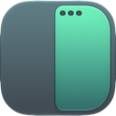
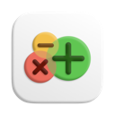
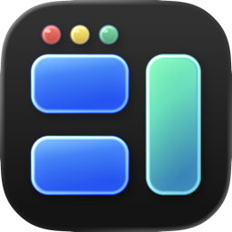

Free, with no second tier.
The whole app. Open source under GPL v3 or later.
- Linked resizing
- Adaptive tiling
- Drag snapping
- Tabbed panes
- Layout Wheel
- Shortcuts & undo
A native Mac window manager that keeps your workspace in step.
Version 0.5.2 beta · 13 October 2026 · 12.7 MB disk image
Video could not load. Try playing it again.
Open a new window. Adaptive tiling makes room in the layout, choosing a split that keeps movement and resizing to a minimum.
Get startedVideo could not load. Try playing it again.
Give one window more room without leaving the other behind. Drag their shared boundary and both sides stay aligned.
Use live resizing to see each change as you move. Or choose a ghost preview and commit the new arrangement when you release.
Video could not load. Try playing it again.
Drag a title bar toward an edge or corner. Preview the placement, then release to snap into place.
Video could not load. Try playing it again.
Tabbed groups windows in resizable panes. Select a tab to bring its window forward.
Turn off Stage Manager for Tabbed. Pane assignments last for the current app session. Beta details
Video could not load. Try playing it again.
Open the Layout Wheel: hold ⌃ ⌥ ⇧, choose a sector, and release. Configure the actions in Settings.
Escape or the center cancels. Optional middle click reserves that button system-wide while enabled.
Video could not load. Try playing it again.
Place windows with global shortcuts. Undo a placement when you want to try another arrangement.
Configure your shortcuts in Settings, with duplicate checks.
Video could not load. Try playing it again.
Free forever, with the source open to everyone. No paid tier, subscription, advertising, behavioral tracking, or sale of user data.
Explore the sourceThe whole app. Open source under GPL v3 or later.
Accessibility lets BetterTile move and resize your windows. It is the only macOS permission the app requests.
Update checks contact GitHub and can be turned off. No behavioral tracking. Read the network disclosure
Update checks send no window data, settings, analytics or crash reports.
Drag the blue handle. Both sides resize together, just like in BetterTile.
There are good tools in this category. Choose the interaction that suits your work.
Swipe to compare all four apps.
| Documented by the developer—Not offered, or not verified |  Rectangle ProUS$9.99 · 10-day trial | Moom$15 · Perpetual license |  AeroSpaceFree | |
|---|---|---|---|---|
| Resize neighbours togetherMove one edge and the next window follows. | Drag the shared edge | After release | —Not verified | Resize commands |
| Tile new windows automaticallyRoom is made as windows open. | Adaptive tiling | Layout triggers | —Not verified | Tree tiling |
| Drag to snapEdges, corners and custom zones. | Yes | Yes | Drag zones | —Not verified |
| Keyboard shortcutsPlace windows without the pointer. | Yes | Yes | Yes | Keyboard and CLI |
| Pointer menuChoose a placement where the pointer is. | Layout Wheel | —Not verified | Pop-up palette | —Not verified |
| Tabbed panesSeveral windows share one pane. | Yes | —Not verified | —Not verified | —Not verified |
| Saved layoutsStore an arrangement and apply it later. | —Not offered | Yes | Saved arrangements | —Not verified |
| Open sourceRead and build the code yourself. | GPL v3 or later | —Not verified | —Not verified | MIT |
| Requires | macOS 26 | macOS 13.5 | macOS 10.13 | —Not verified |
| A good fit for | Direct shared-boundary control, adaptive tiling, and Tabbed panes. | Custom placement commands and saved workspaces, including automatic layout triggers. | Reusable arrangements and a configurable window-control palette. | Keyboard and CLI tiling with plain-text configuration and virtual workspaces. |
| Sources |
Sources checked 3 October 2026. A dash is not a claim of no support. Prices are the values displayed on the check date; Moom’s page did not state a currency code. Free Rectangle and Loop also offer free placement tools. Full research and sources
macOS 26 or later
Public beta · Free forever
Get the disk image from the official GitHub release. Open it and drag BetterTile into Applications.
Download the disk imageThe beta is self-signed, without Apple Developer ID or notarization. After the first launch attempt, confirm the source, then choose Open Anyway in System Settings → Privacy & Security.
Follow the app’s explanation to grant Accessibility permission. Choose your layout and enable the controls you want.
Full installation guideRead the guide, or ask on GitHub. Feature ideas and bug reports are welcome.
The current beta requires macOS 26 or later. Accessibility is the only macOS permission BetterTile requests. Check the latest release notes before installing a new version.
Accessibility lets BetterTile read window frames, then move and resize eligible windows. The app explains the permission before requesting it.
Yes. BetterTile is free forever and open source under GPL v3 or later. There is no paid tier, trial expiry, subscription, advertising, behavioral tracking, or sale of user data.
Window and configuration data stay on your Mac. Update checks and downloads contact GitHub, which receives ordinary connection metadata. Automatic update checks run every four hours by default and can be disabled. Send Feedback opens a GitHub form with the app version and build in its suggested title; it submits no issue automatically. Security and privacy
BetterTile shows release notes and asks before downloading or installing. Sparkle verifies an EdDSA signature on each update. This is separate from the beta’s self-signed macOS code signature. You can also use Check for Updates from the app.
Turn off Stage Manager for Tabbed. Pane assignments and Undo history last for the current app session. Tabbed edge splits stop at 12 panes; cross-display tab dragging is unavailable. Some apps refuse requested window sizes. Broader multi-display and fullscreen behavior is still under validation. Full beta limitations
BetterTile can work with windows arranged by macOS tiling. For dragging to screen edges, use either BetterTile Drag Snapping or macOS edge tiling to avoid competing previews.

macOS 26 or later. Free and open source.
Version 0.5.2 beta · 13 October 2026 · 12.7 MB disk image. Self-signed beta: first-install instructions